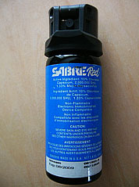

Pepper spray is an inflammatory agent; thus, when sprayed into an individual’s face, it causes immediate swelling of the eyes due to capillary dilation. This leads to temporary blindness. OC also causes inflammation of the mucous membranes lining the nose, mouth, and throat. This may cause a runny nose, uncontrollable coughing, and difficulty with breathing and talking. Some individuals exposed to pepper spray will even experience upper body spasms that force them to bend forward.
How long an individual is affected by pepper spray depends on the concentration of the OC in the spray. Police officers typically use a pepper spray that contains 10% Oleoresin Capsaicin that affects an individual for about 30 to 45 minutes. Because sensitivity to pepper spray varies from person to person, some feel the effects of pepper spray for hours after exposure.
Although pepper spray cannot be completely neutralized, its effects can be minimized. OC is not soluble in water, so splashing large volumes of water on affected body parts has little to no effect. Because OC is soluble in fats and oils, milk or mild dish detergents can be used to help wash it out.
Interestingly, pepper sprays with higher percentages of OC do not necessarily produce effects that are more dramatic. An effective pepper spray needs to allow a police officer time to disable the suspect and then take control of the situation. As a result, the most effective pepper sprays contain between 2% and 10% OC. Pepper sprays with low OC concentrations are less viscous or lighter than sprays containing higher concentrations of OC. The lighter the liquid in a spray, the faster it will penetrate the mucous membranes. In addition, the percentage does not correlate to the spray’s level of intensity. Pepper sprays with high concentrations of OC may cause more inflammation of the skin surrounding the mucous membranes and may cause the inflammation to last longer.

In February 1996, the head of the FBI's less-than-lethal weapons program, Special Agent Thomas Ward, pleaded guilty to taking a bribe of $57 000 from a pepper spray manufacturer. Ward approved of the company’s pepper spray product called Cap-stun despite concerns of US military scientists that it was too strong. Ward was sentenced to two months in prison and three months probation for his crime.